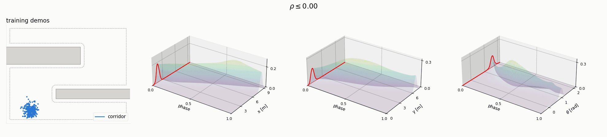
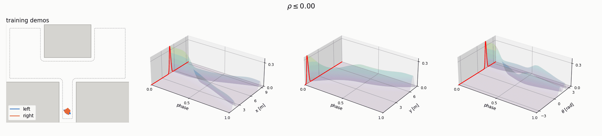
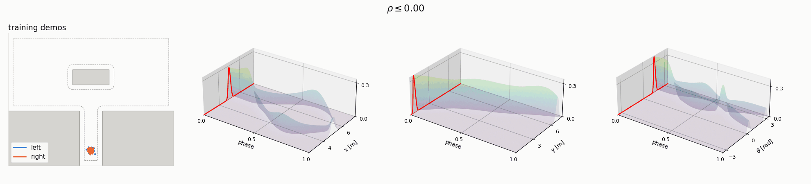
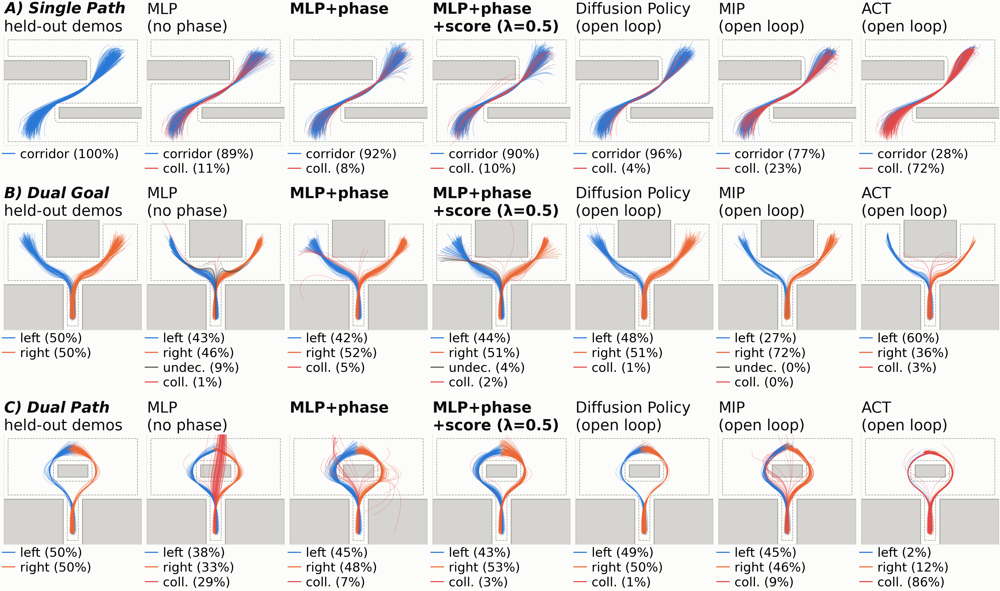
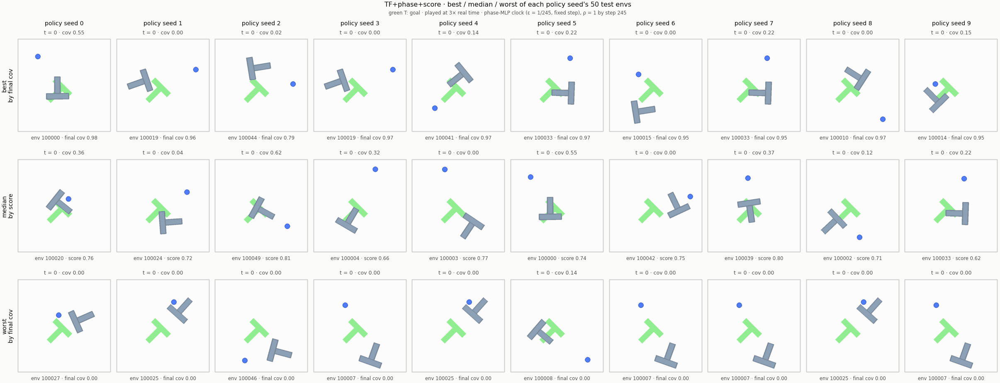
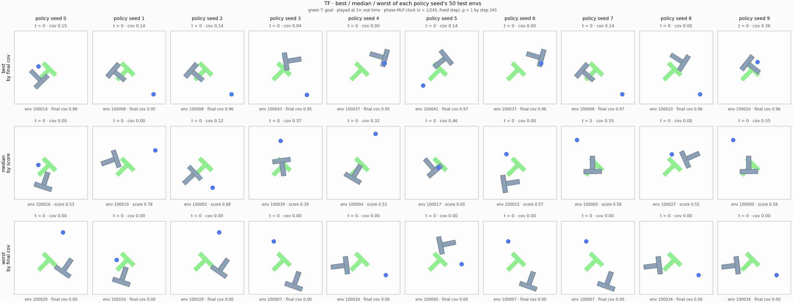
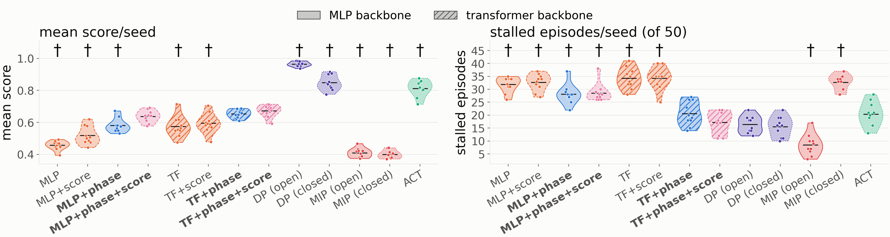
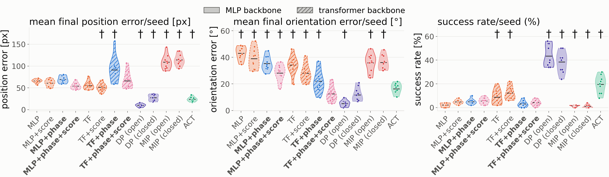

Deterministic behavior cloning policies struggle to capture multimodal robotic action distributions, suffering from mode averaging. Accepted solutions transform stochastic samples into robot actions, often via iterative computation (e.g. diffusion and flow matching). Flow matching backbones themselves are deterministic however, leading us to ask: why do flow matching models succeed at capturing flows between endpoint distributions while deterministic policies fail in similar situations? In this work, we prove that flow matching is a special case of behavior cloning, show that conditioning a deterministic policy on task progress lets it reproduce multimodal demonstrations whose start states vary, and characterize a score-based regularizer that pulls the policy toward the locally dominant demonstrated velocity where modes overlap. We demonstrate this empirically on multimodal robot navigation and in-plane manipulation tasks. Our findings indicate that lightweight, single-step deterministic policies can solve multimodal tasks while providing a Pareto-optimal trade-off for ultra-low latency, CPU based control.
The policy is conditioned on task progress ρ ∈ [0, 1], the role time plays in flow matching. Phaseformer injects ρ into every transformer block through AdaLN, effectively giving each stage of the task its own policy. At run time ρ comes from a clock or a small learned progress estimator. It is never sampled.
Where modes overlap, the L2 (MSE) loss alone averages them. We keep that loss and add an L1 regularizer on the velocity error projected onto the score \(\nabla_{\mathbf{x}}\log\hat p_\rho\) of the demonstrations at that phase. It pulls predictions toward the locally dominant (median) velocity. The score is precomputed in closed form and is not used at inference.
A deterministic policy can only send two starts to different modes if the starts differ. Varied demonstration start states provide that, and 5–10% noisy-start demonstrations are enough. The randomness lives in the training data, not at inference.
\(\mathbf{u}\): demonstrated action (a state velocity), \(\mathbf{x}\): robot state, \(\mathcal{O}\): observation, \(\rho\): phase, \(\hat p_\rho\): kernel density estimate of the demonstrated states at phase \(\rho\).
Viewed over phase, a set of demonstrations looks just like a flow matching probability path: a start distribution that evolves and splits into modes. Flow matching gives its network the phase; standard behavior cloning does not, so it averages velocities across phases and modes. We prove that flow matching is phase-conditioned behavior cloning on straight-line demonstrations (Theorem 1, Lemma 1).
A · Single path one goal, one route

B · Dual goal two goals, two routes

C · Dual path one goal, two routes around an obstacle

Left: training demonstrations of each navigation scenario. Right: marginal distributions of x, y and heading θ as the phase ρ sweeps from 0 to 1.
A 134K-parameter MLP steers a non-holonomic robot from 1,024 held-out starts. In the dual-path scenario (C), the phase-free MLP drives straight into the obstacle on 29% of rollouts. Adding phase cuts collisions to 7%, and the score regularizer cuts them to 3%, close to Diffusion Policy's 1%, with a single forward pass per step.

Rollouts of every policy (seed 0). Blue/orange: successful rollouts (left/right mode in B and C); red: collision; gray: undecided. Click the figure for full resolution.
Phaseformer (907K parameters) is trained on Diffusion Policy's human Push-T demonstrations, and reads its phase from a small learned progress estimator. Compare it against its ablations and the baselines below.
Phaseformer+score ours

Compare with: TF (no phase)

loading…Columns: 10 policy seeds. Rows: each seed's best, median and worst of its 50 test episodes. Played at 3× real time. Green T: goal pose; blue dot: pusher.


10 seeds per method (dots) and their mean (bar), 50 episodes per seed. Hatched: transformer backbone (TF+phase is Phaseformer). †: p < 0.05 against TF+phase+score (Welch's t-test over seeds).